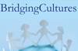
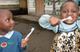
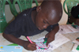
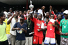
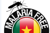

Seit mehr als einem Jahrzehnt engagiert sich die Hope Foundation in mehreren großen Projekten in Kamerun und Deutschland. Alle Projekte zielen darauf ab, die Hauptaufgabe der Hope Foundation zu erfüllen: den Hunger zu lindern und Menschen besser auszubilden, um benachteiligte Gemeinden in Kamerun zu integrieren und ihnen Mitbestimmungsmöglichkeiten zu geben.

Fair Champions ist ein Bildungsprojekt über Fair Trade in der Textil-, und Schuhproduktion für Schulklassen der 5.-8. Klasse. ...read more
 Wir errichten ein Bildungszentrum in der Stadt Bertoua, im Osten Kameruns. Das Projekt startete 2013 zusammen mit 15 Architekturstudierende der Technischen Universität Berlin, die den Entwurf erstellten und uns in der ersten und zweiten Bauphase vor Ort unterstützten. ...read more
Wir errichten ein Bildungszentrum in der Stadt Bertoua, im Osten Kameruns. Das Projekt startete 2013 zusammen mit 15 Architekturstudierende der Technischen Universität Berlin, die den Entwurf erstellten und uns in der ersten und zweiten Bauphase vor Ort unterstützten. ...read more
 "Barfuss für Afrika" ist ein Charity-Event zu gunsten des Shoe Aid Projects.
Bei dieser Veranstaltung werden einen ganzen Tag lang Schuhe gesammelt.
Soziales Engagement gepaart mit guter Musik und gutem Essen. ...read more
"Barfuss für Afrika" ist ein Charity-Event zu gunsten des Shoe Aid Projects.
Bei dieser Veranstaltung werden einen ganzen Tag lang Schuhe gesammelt.
Soziales Engagement gepaart mit guter Musik und gutem Essen. ...read more
 Bridging Cultures ist ein interkulturelles Bildungsprogramm mit dem Ziel, interkulturelle Beziehungen zu fördern und das Bewusstsein von Berliner Schüler*innen für die entwicklungspolitischen Herausforderungen der Länder des Südens zu wecken. ...read more
 Hauptziel dieses Projektes ist es, den Minderheiten der Mbororos und Baka-Pygmäen in Ostkamerun Mitentscheidungsmöglichkeiten zu geben, indem man ihnen ihre Rechte und Pflichten erklärt, damit sie ihre eigenen Fähigkeiten in vollem Umfang nutzen können. ...read more
Hauptziel dieses Projektes ist es, den Minderheiten der Mbororos und Baka-Pygmäen in Ostkamerun Mitentscheidungsmöglichkeiten zu geben, indem man ihnen ihre Rechte und Pflichten erklärt, damit sie ihre eigenen Fähigkeiten in vollem Umfang nutzen können. ...read more
 Die Hope Foundation ist am Bau von Wasseranlagen in einigen der ärmsten Teile Kameruns beteiligt. Mit Hilfe internationaler Freiwilliger werden Wasserentnahmestellen in den Provinzen gebaut, saniert oder erneuert, wo es einen erheblichen Mangel an grundlegender Infrastruktur gibt. ...read more
Die Hope Foundation ist am Bau von Wasseranlagen in einigen der ärmsten Teile Kameruns beteiligt. Mit Hilfe internationaler Freiwilliger werden Wasserentnahmestellen in den Provinzen gebaut, saniert oder erneuert, wo es einen erheblichen Mangel an grundlegender Infrastruktur gibt. ...read more
 Mundhygiene und die Wichtigkeit des richtigen Zähneputzens sind in allen Gesellschaften von größter Bedeutung, aber bestimmte Gegenden Kameruns geben Anlass zu Beunruhigung. Das Problem ist vor allem, dass die meisten Kinder in diesen entlegenen Teilen Kameruns ohne Zahnbürste aufgewachsen sind. ...read more
 Das Computer-Projekt der Hope Foundation sammelt gespendete Computer von privaten und gewerblichen Spendern und verschifft sie nach Kamerun, wo sie für die Ausbildung von Jugendlichen, Frauen und Schülern auf dem Land und in Schulen genutzt werden. Das Projekt hat es geschafft, Menschen aus allen Lebensbereichen zu mobilisieren und in der Computer- und Internetnutzung auszubilden, damit sie ihr wahres Potenzial erreichen konnten. ...read more
Das Computer-Projekt der Hope Foundation sammelt gespendete Computer von privaten und gewerblichen Spendern und verschifft sie nach Kamerun, wo sie für die Ausbildung von Jugendlichen, Frauen und Schülern auf dem Land und in Schulen genutzt werden. Das Projekt hat es geschafft, Menschen aus allen Lebensbereichen zu mobilisieren und in der Computer- und Internetnutzung auszubilden, damit sie ihr wahres Potenzial erreichen konnten. ...read more
 Die Hope Foundation unterstützt seit ihrer Gründung eine Reihe von Schulen, Waisenhäusern und Sozialzentren. Unser Stipendienprogramm dient als wichtigstes Instrument zur Motivation und zur Verbesserung der Fähigkeiten und Kenntnisse vieler Menschen und Institutionen der kamerunischen Gesellschaft. ...read more
 Jedes Jahr im Dezember schenkt die Hope Foundation Kindern in Waisenheimen und aus ihrer Umgebung Spielzeug, Schulmaterial, Medikamente und Kleidung. Eine Weihnachtsfeier mit Gesang, Tanz und Essen begleitet die lang erwarteten Geschenke und zaubert Freude und ein Lächeln auf jedes Kindergesicht. ...read more
Jedes Jahr im Dezember schenkt die Hope Foundation Kindern in Waisenheimen und aus ihrer Umgebung Spielzeug, Schulmaterial, Medikamente und Kleidung. Eine Weihnachtsfeier mit Gesang, Tanz und Essen begleitet die lang erwarteten Geschenke und zaubert Freude und ein Lächeln auf jedes Kindergesicht. ...read more
 HIV/AIDS gibt immer noch Anlass zu großer Sorge in Kamerun und Afrika im Allgemeinen. Die Hope Foundation kämpft mit einer Anzahl von Informations-, Sensibilisierungs- und Ausbildungskampagnen in ländlichen Gemeinden dafür, die Ausbreitung der Krankheit einzuschränken. ...read more
 Malaria Free Cameroon ist eine Initiative der Hope Foundation, die die lokale Bevölkerung vor Malariainfektionen schützen soll. ...read more
 Das Shoe Aid Projekt ist ein vom Hope Foundation e.V. initiiertes Schuhspenden- und Schuhrecyclingprogramm, innerhalb dessen kaum getragene, sowie unbenutzte Schuhe gesammelt und kostenlos an Kinder und Familien in Afrika verteilt werden. ...read more
Das Shoe Aid Projekt ist ein vom Hope Foundation e.V. initiiertes Schuhspenden- und Schuhrecyclingprogramm, innerhalb dessen kaum getragene, sowie unbenutzte Schuhe gesammelt und kostenlos an Kinder und Familien in Afrika verteilt werden. ...read more